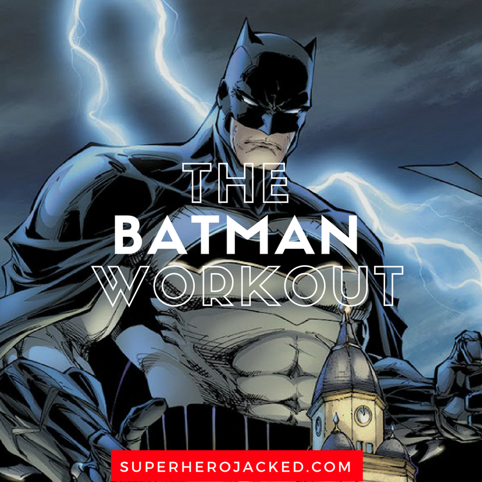

Unlike most superheroes, Batman does not possess any superpowers, instead relying on his intellect, fighting skills, and wealth. The 1960s Batman television series used a camp aesthetic, which continued to be associated with the character for years after the show ended.
